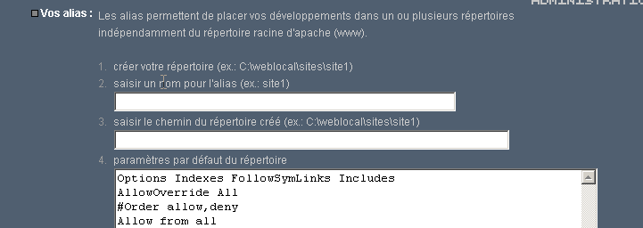
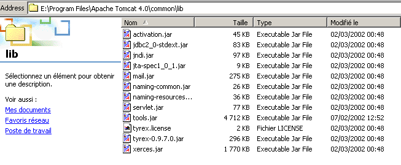

8. الملاحق
8.1. أدوات تطوير الويب
نوضح هنا أين يمكن العثور على الأدوات اللازمة لتطوير الويب وكيفية تثبيتها. وقد تطورت إصدارات بعض الأدوات، ومن المحتمل ألا تنطبق التفسيرات الواردة هنا على أحدث الإصدارات. وسيتعين على القارئ عندئذٍ تكييف... في دورة برمجة الويب، سنستخدم بشكل أساسي الأدوات التالية، وجميعها متاحة مجانًا:
- متصفح حديث قادر على عرض XML. تم اختبار الأمثلة الواردة في الدورة التدريبية باستخدام Internet Explorer 6.
- JDK (مجموعة أدوات تطوير Java) حديثة. تم اختبار الأمثلة الواردة في هذه الدورة باستخدام JDK 1.4. تتضمن مجموعة أدوات تطوير Java هذه المكون الإضافي لمتصفح Java 1.4، الذي يسمح للمتصفحات بعرض تطبيقات Java الصغيرة باستخدام JDK 1.4.
- بيئة تطوير Java لكتابة برامج Java الصغيرة. هنا، هي JBuilder 7.
- خوادم الويب: Apache، PWS (Personal Web Server)، Tomcat.
- سيتم استخدام Apache لتطوير تطبيقات الويب بلغة PERL (Practical Extracting and Reporting Language) أو PHP (Personal Home Page)
- سيتم استخدام PWS لتطوير تطبيقات الويب بلغة ASP (Active Server Pages) أو PHP
- سيتم استخدام Tomcat لتطوير تطبيقات الويب باستخدام برامج Java الصغيرة أو JSP (Java Server Pages)
- تطبيق لإدارة قواعد البيانات: MySQL
- EasyPHP: أداة تجمع بين خادم الويب Apache ولغة PHP ونظام إدارة قواعد البيانات MySQL
8.1.1. خوادم الويب والمتصفحات ولغات البرمجة النصية
- خوادم الويب الرئيسية
- Apache (Linux، Windows)
- خادم معلومات الإنترنت (IIS) (NT)، خادم الويب الشخصي (PWS) (Windows 9x)
- المتصفحات الرئيسية
- إنترنت إكسبلورر (ويندوز)
- نتسكيب (لينكس، ويندوز)
- لغات البرمجة النصية من جانب الخادم
- VBScript (IIS، PWS)
- جافا سكريبت (IIS، PWS)
- Perl (أباتشي، IIS، PWS)
- PHP (أباتشي، IIS، PWS)
- Java (Apache، Tomcat)
- لغات .NET
- لغات البرمجة النصية من جانب المتصفح
- VBScript (IE)
- JavaScript (IE، Netscape)
- PerlScript (IE)
- Java (IE، Netscape)
8.1.2. أين تجد الأدوات
http://www.netscape.com/ (رابط التنزيلات) | |
http://www.microsoft.com/windows/ie/default.asp | |
http://www.php.net http://www.php.net/downloads.php (ملفات Windows الثنائية) | |
http://www.activestate.com http://www.activestate.com/Products/ http://www.activestate.com/Products/ActivePerl/ | |
http://msdn.microsoft.com/scripting (اتبع رابط Windows Script) | |
http://java.sun.com/ http://java.sun.com/downloads.html (JSE) http://java.sun.com/j2se/1.4/download.html | |
http://www.apache.org/ http://www.apache.org/dist/httpd/binaries/win32/ | |
مضمن في حزمة خيارات NT 4.0 لنظام التشغيل Windows 95 مضمن في قرص Windows 98 المضغوط http://www.microsoft.com/ntserver/nts/downloads/recommended/NT4OptPk/win95.asp | |
http://www.microsoft.com | |
http://jakarta.apache.org/tomcat/ | |
http://www.borland.com/jbuilder/ http://www.borland.com/products/downloads/download_jbuilder.html | |
http://www.easyphp.org/ http://www.easyphp.org/telechargements.php3 |
8.1.3. EasyPHP
هذا التطبيق مريح للغاية لأنه يضم ما يلي في حزمة واحدة:
- خادم الويب Apache (1.3.x)
- لغة PHP (4.x)
- نظام إدارة قواعد البيانات MySQL (3.23.x)
- أداة إدارة MySQL: PhpMyAdmin
يبدو تطبيق التثبيت كما يلي:

تثبيت EasyPHP سهل للغاية، ويتم إنشاء بنية مجلدات في نظام الملفات:

ملف التطبيق القابل للتنفيذ | |
هيكل دليل خادم Apache | |
دليل قاعدة بيانات MySQL | |
هيكل دليل تطبيق phpMyAdmin | |
هيكل دليل PHP | |
جذر شجرة الدلائل لصفحات الويب التي يقدمها خادم Apache الخاص بـ EasyPHP | |
الدليل الذي يمكنك وضع نصوص CGI فيه لخادم Apache |
الميزة الرئيسية لـ EasyPHP هي أن التطبيق يأتي مهيئًا مسبقًا. وبالتالي، فإن Apache و PHP و MySQL مهيأة بالفعل للعمل معًا. عند تشغيل EasyPHP عبر الاختصار الموجود في قائمة البرامج، يظهر رمز في الزاوية اليمنى السفلية من الشاشة.
 |
وهو عبارة عن حرف E مع نقطة حمراء، والتي يجب أن تومض إذا كان خادم الويب Apache وقاعدة بيانات MySQL قيد التشغيل. عند النقر بزر الماوس الأيمن عليه، يمكنك الوصول إلى خيارات القائمة:

يتيح لك خيار الإدارة تكوين الإعدادات وإجراء اختبارات الوظائف:

8.1.3.1. إدارة PHP
يجب أن يسمح لك زر "معلومات PHP" بالتحقق من أن تركيبة Apache-PHP تعمل بشكل صحيح: يجب أن تظهر صفحة معلومات PHP:

يعرض زر "الملحقات" قائمة بملحقات PHP المثبتة. هذه الملحقات هي في الواقع مكتبات وظائف.

تُظهر الشاشة أعلاه، على سبيل المثال، أن الوظائف المطلوبة لاستخدام قاعدة بيانات MySQL موجودة.
يعرض زر "الإعدادات" اسم المستخدم وكلمة المرور لمسؤول قاعدة بيانات MySQL.

يتجاوز استخدام قاعدة بيانات MySQL نطاق هذه النظرة العامة السريعة، ولكن من الواضح هنا أنه يجب تعيين كلمة مرور لمسؤول قاعدة البيانات.
8.1.3.2. إدارة Apache
لا تزال في صفحة إدارة EasyPHP، يتيح لك الرابط "Your Aliases" (أسماءك المستعارة) تعريف أسماء مستعارة مرتبطة بدليل ما. وهذا يسمح لك بوضع صفحات الويب خارج دليل www في شجرة أدلة EasyPHP.

إذا أدخلت المعلومات التالية في الصفحة أعلاه:

ونقرت على زر "التحقق من الصحة"، تُضاف الأسطر التالية إلى ملف <easyphp>\apache\conf\httpd.conf:
Alias /st/ "e:/data/serge/web/"
<Directory "e:/data/serge/web">
Options FollowSymLinks Indexes
AllowOverride None
Order deny,allow
allow from 127.0.0.1
deny from all
</Directory>
يشير <easyphp> إلى دليل تثبيت EasyPHP. httpd.conf هو ملف تكوين خادم Apache. يمكنك بالتالي تحقيق نفس النتيجة عن طريق تعديل هذا الملف مباشرة. عادةً ما يتم تطبيق التغييرات على ملف httpd.conf على الفور بواسطة Apache. إذا لم يكن الأمر كذلك، فستحتاج إلى إيقاف الخادم وإعادة تشغيله، باستخدام أيقونة EasyPHP:
لإكمال مثالنا، يمكننا الآن وضع صفحات الويب في شجرة الدليل e:\data\serge\web:
وطلب هذه الصفحة باستخدام الاسم المستعار st:

في هذا المثال، تم تكوين خادم Apache ليعمل على المنفذ 81. المنفذ الافتراضي له هو 80. يتم التحكم في هذا من خلال السطر التالي في ملف httpd.conf الذي رأيناه سابقًا:
8.1.3.3. ملف تكوين Apache htpd.conf
عندما تريد ضبط Apache بدقة، عليك تعديل ملف التكوين httpd.conf يدويًا، الموجود هنا في المجلد <easyphp>\apache\conf:

فيما يلي بعض النقاط الرئيسية التي يجب ملاحظتها في ملف التكوين هذا:
الدور | |
يحدد المجلد الذي يحتوي على بنية دليل Apache | |
يحدد المنفذ الذي سيستخدمه خادم الويب. عادةً ما يكون هذا هو 80. من خلال تغيير هذا السطر، يمكنك تشغيل خادم الويب على منفذ مختلف | |
عنوان البريد الإلكتروني لمسؤول خادم Apache | |
اسم الجهاز الذي يعمل عليه خادم Apache | |
دليل تثبيت خادم Apache. عندما تظهر أسماء الملفات النسبية في ملف التكوين، فإنها تكون نسبية بالنسبة لهذا الدليل. | |
الدليل الجذري لشجرة صفحات الويب التي يقدمها الخادم. هنا، سيتوافق عنوان URL http://machine/rep1/fic1.html مع الملف E:\Program Files\EasyPHP\www\rep1\fic1.html | |
يحدد خصائص المجلد السابق | |
مجلد logs، وبالتالي <ServerRoot>\logs\error.log: E:\Program Files\EasyPHP\apache\logs\error.log. هذا هو الملف الذي يجب التحقق منه إذا لاحظت أن خادم Apache لا يعمل. | |
سيكون E:\Program Files\EasyPHP\cgi-bin هو جذر شجرة الدليل حيث يمكنك وضع نصوص CGI. وبالتالي، سيكون عنوان URL http://machine/cgi-bin/rep1/script1.pl هو عنوان URL لنص CGI E:\Program Files\EasyPHP\cgi-bin\rep1\script1.pl. | |
يحدد خصائص المجلد أعلاه | |
أسطر لتحميل الوحدات النمطية التي تسمح لـ Apache بالعمل مع PHP4. | |
تعيين امتدادات الملفات ليتم التعامل معها كملفات PHP |
8.1.3.4. إدارة MySQL باستخدام PhpMyAdmin
في صفحة إدارة EasyPHP، انقر على زر PhpMyAdmin:

تعرض القائمة المنسدلة الموجودة أسفل الصفحة الرئيسية قواعد البيانات الحالية. |  |
الرقم الموجود بين قوسين هو عدد الجداول. إذا حددت قاعدة بيانات، فسيتم عرض جداولها: |  |
تقدم صفحة الويب عددًا من العمليات على قاعدة البيانات:

إذا نقرت على رابط "عرض المستخدم":

لا يوجد سوى مستخدم واحد هنا: root، وهو مسؤول MySQL. من خلال النقر على رابط "تحرير"، يمكنك تغيير كلمة المرور الخاصة به، والتي هي فارغة حاليًا — وهي ممارسة غير موصى بها للمسؤول.
لن نذكر المزيد عن phpMyAdmin، وهو برنامج غني بالميزات يستحق مناقشة تمتد لعدة صفحات.
8.1.4. PHP
لقد رأينا كيفية الحصول على PHP من خلال تطبيق EasyPHP. للحصول على PHP مباشرةً، انتقل إلى الموقع الإلكتروني http://www.php.net.
لا يقتصر استخدام PHP على الويب. يمكنك استخدامه كلغة برمجة نصية على نظام Windows. قم بإنشاء البرنامج النصي التالي واحفظه باسم date.php:
<?
// script php affichant l'heure
$maintenant=date("j/m/y, H:i:s",time());
echo "Nous sommes le $maintenant";
?>
في نافذة DOS، انتقل إلى الدليل الذي يحتوي على ملف date.php وقم بتشغيله:
E:\data\serge\php\essais>"e:\program files\easyphp\php\php.exe" date.php
X-Powered-By: PHP/4.2.0
Content-type: text/html
Nous sommes le 18/07/02, 09:31:01
8.1.5. PERL
من الأفضل أن يكون Internet Explorer مثبتًا بالفعل. إذا كان موجودًا، فسيقوم Active Perl بتهيئته لقبول نصوص PERL في صفحات HTML، وهي نصوص سيقوم IE نفسه بتنفيذها على جانب العميل. يقع موقع Active Perl على الرابط http://www.activestate.comA. عند التثبيت، سيتم تثبيت PERL في دليل سنسميه <perl>. ويحتوي هذا الدليل على بنية الدلائل التالية:
DEISL1 ISU 32 403 23/06/00 17:16 DeIsL1.isu
BIN <REP> 23/06/00 17:15 bin
LIB <REP> 23/06/00 17:15 lib
HTML <REP> 23/06/00 17:15 html
EG <REP> 23/06/00 17:15 eg
SITE <REP> 23/06/00 17:15 site
HTMLHELP <REP> 28/06/00 18:37 htmlhelp
يوجد الملف القابل للتنفيذ perl.exe في <perl>\bin. Perl هي لغة برمجة نصية تعمل على أنظمة Windows وUnix. كما أنها تُستخدم في برمجة الويب. دعونا نكتب أول برنامج نصي لنا:
# script PERL affichant l'heure
# modules
use strict;
# programme
my ($secondes,$minutes,$heure)=localtime(time);
print "Il est $heure:$minutes:$secondes\n";
احفظ هذا البرنامج النصي في ملف باسم heure.pl. افتح نافذة DOS، وانتقل إلى الدليل الذي يحتوي على البرنامج النصي، وقم بتشغيله:
E:\data\serge\Perl\Essais>e:\perl\bin\perl.exe heure.pl
Il est 9:34:21
8.1.6. VBScript، JavaScript، PerlScript
هذه لغات برمجة نصية لنظام Windows. يمكن تشغيلها في بيئات متنوعة مثل
- Windows Scripting Host للاستخدام المباشر في Windows، خاصة لكتابة نصوص برمجية لإدارة النظام
- Internet Explorer. ثم يتم استخدامها داخل صفحات HTML، حيث تضيف مستوى من التفاعل لا يمكن تحقيقه باستخدام HTML وحده.
- Internet Information Server (IIS)، خادم الويب الخاص بـ Microsoft على NT/2000، وما يعادله، Personal Web Server (PWS)، على Win9x. في هذه الحالة، تُستخدم VBScript لبرمجة الويب من جانب الخادم، وهي تقنية تسميها Microsoft ASP (Active Server Pages).
قم بتنزيل ملف التثبيت من الرابط: http://msdn.microsoft.com/scripting واتبع روابط Windows Script. يتم تثبيت ما يلي:
- حاوية Windows Scripting Host، التي تدعم لغات برمجة نصية متنوعة مثل VBScript و JavaScript، بالإضافة إلى لغات أخرى مثل PerlScript، المضمنة في Active Perl.
- مترجم VBScript
- مترجم JavaScript
دعونا نجري بعض الاختبارات السريعة. دعونا نبني برنامج VBScript التالي:
' a class
class personne
Dim nom
Dim age
End class
' creation of a person object
Set p1=new personne
With p1
.nom="dupont"
.age=18
End With
' display properties person p1
With p1
wscript.echo "nom=" & .nom
wscript.echo "age=" & .age
End With
يستخدم هذا البرنامج كائنات. لنسمه objects.vbs (يشير الامتداد .vbs إلى ملف VBScript). انتقل إلى الدليل الذي يوجد فيه الملف وقم بتشغيله:
E:\data\serge\windowsScripting\vbscript\poly\objets>cscript objets.vbs
Microsoft (R) Windows Script Host Version 5.6
Copyright (C) Microsoft Corporation 1996-2001. All rights reserved.
nom=dupont
age=18
الآن دعونا نبني برنامج JavaScript التالي الذي يستخدم المصفوفات:
// tableau dans un variant
// tableau vide
tableau=new Array();
affiche(tableau);
// tableau croît dynamiquement
for(i=0;i<3;i++){
tableau.push(i*10);
}
// affichage tableau
affiche(tableau);
// encore
for(i=3;i<6;i++){
tableau.push(i*10);
}
affiche(tableau);
// tableaux à plusieurs dimensions
WScript.echo("-----------------------------");
tableau2=new Array();
for(i=0;i<3;i++){
tableau2.push(new Array());
for(j=0;j<4;j++){
tableau2[i].push(i*10+j);
}//for j
}// for i
affiche2(tableau2);
// fin
WScript.quit(0);
// ---------------------------------------------------------
function affiche(tableau){
// affichage tableau
for(i=0;i<tableau.length;i++){
WScript.echo("tableau[" + i + "]=" + tableau[i]);
}//for
}//function
// ---------------------------------------------------------
function affiche2(tableau){
// affichage tableau
for(i=0;i<tableau.length;i++){
for(j=0;j<tableau[i].length;j++){
WScript.echo("tableau[" + i + "," + j + "]=" + tableau[i][j]);
}// for j
}//for i
}//function
يستخدم هذا البرنامج المصفوفات. لنسمه arrays.js (تشير اللاحقة .js إلى ملف JavaScript). انتقل إلى الدليل الذي يوجد فيه وقم بتشغيله:
E:\data\serge\windowsScripting\javascript\poly\tableaux>cscript tableaux.js
Microsoft (R) Windows Script Host Version 5.6
Copyright (C) Microsoft Corporation 1996-2001. Tous droits réservés.
tableau[0]=0
tableau[1]=10
tableau[2]=20
tableau[0]=0
tableau[1]=10
tableau[2]=20
tableau[3]=30
tableau[4]=40
tableau[5]=50
-----------------------------
tableau[0,0]=0
tableau[0,1]=1
tableau[0,2]=2
tableau[0,3]=3
tableau[1,0]=10
tableau[1,1]=11
tableau[1,2]=12
tableau[1,3]=13
tableau[2,0]=20
tableau[2,1]=21
tableau[2,2]=22
tableau[2,3]=23
مثال أخير في PerlScript لنختتم به. يجب أن يكون Active Perl مثبتًا لديك للوصول إلى PerlScript.
<job id="PERL1">
<script language="PerlScript">
# du Perl classique
%dico=("maurice"=>"juliette","philippe"=>"marianne");
@cles= keys %dico;
for ($i=0;$i<=$#cles;$i++){
$cle=$cles[$i];
$valeur=$dico{$cle};
$WScript->echo ("clé=".$cle.", valeur=".$valeur);
}
# du perlscript utilisant les objets Windows Script
$dico=$WScript->CreateObject("Scripting.Dictionary");
$dico->add("maurice","juliette");
$dico->add("philippe","marianne");
$WScript->echo($dico->item("maurice"));
$WScript->echo($dico->item("philippe"));
</script>
</job>
يوضح هذا البرنامج كيفية إنشاء واستخدام قاموسين: أحدهما بنمط Perl الكلاسيكي، والآخر باستخدام كائن Windows Script Scripting Dictionary. لنحفظ هذا الكود في الملف dico.wsf (wsf هي امتداد ملفات Windows Script). انتقل إلى مجلد البرنامج وقم بتشغيله:
E:\data\serge\windowsScripting\perlscript\essais>cscript dico.wsf
Microsoft (R) Windows Script Host Version 5.6
Copyright (C) Microsoft Corporation 1996-2001. Tous droits réservés.
clé=philippe, valeur=marianne
clé=maurice, valeur=juliette
juliette
marianne
يمكن لـ PerlScript استخدام كائنات من الحاوية التي يعمل فيها. هنا، كانت هذه كائنات من حاوية Windows Script. في سياق برمجة الويب، يمكن تنفيذ نصوص VBScript و JavaScript و PerlScript إما داخل متصفح IE أو على خادم PWS أو IIS. إذا كان النص البرمجي معقدًا إلى حد ما، فقد يكون من الحكمة اختباره خارج سياق الويب، داخل حاوية Windows Script كما رأينا سابقًا. بهذه الطريقة، يمكنك فقط اختبار وظائف البرنامج النصي التي لا تستخدم كائنات خاصة بالمتصفح أو الخادم. حتى مع هذا القيد، تظل هذه الخيار مفيدًا لأنه من غير العملي عمومًا تصحيح أخطاء البرامج النصية التي تعمل داخل خوادم الويب أو المتصفحات.
8.1.7. JAVA
تتوفر Java على الرابط: http://www.sun.com (انظر بداية هذا المستند) ويتم تثبيتها في بنية دليل تسمى <java> تحتوي على العناصر التالية:
22/05/2002 05:51 <DIR> .
22/05/2002 05:51 <DIR> ..
22/05/2002 05:51 <DIR> bin
22/05/2002 05:51 <DIR> jre
07/02/2002 12:52 8 277 README.txt
07/02/2002 12:52 13 853 LICENSE
07/02/2002 12:52 4 516 COPYRIGHT
07/02/2002 12:52 15 290 readme.html
22/05/2002 05:51 <DIR> lib
22/05/2002 05:51 <DIR> include
22/05/2002 05:51 <DIR> demo
07/02/2002 12:52 10 377 848 src.zip
11/02/2002 12:55 <DIR> docs
في دليل bin، ستجد javac.exe، وهو مُركب Java، و java.exe، وهي آلة Java الافتراضية. يمكنك إجراء الاختبارات التالية:
- اكتب البرنامج النصي التالي:
//java program displaying the time
import java.io.*;
import java.util.*;
public class heure{
public static void main(String arg[]){
// retrieve date & time
Date maintenant=new Date();
// we display
System.out.println("Il est "+maintenant.getHours()+
":"+maintenant.getMinutes()+":"+maintenant.getSeconds());
}//hand
}//class
- احفظ هذا البرنامج باسم heure.java. افتح نافذة DOS. انتقل إلى الدليل الذي يحتوي على ملف heure.java وقم بتجميعه:
D:\data\java\essais>c:\jdk1.3\bin\javac heure.java
Note: heure.java uses or overrides a deprecated API.
Note: Recompile with -deprecation for details.
في الأمر أعلاه، يجب استبدال c:\jdk1.3\bin\javac بالمسار الدقيق لمترجم javac.exe. يجب أن يكون لديك الآن ملف باسم heure.class في نفس الدليل الذي يوجد فيه heure.java؛ وهذا هو البرنامج الذي سيتم تنفيذه الآن بواسطة الآلة الافتراضية java.exe.
- قم بتشغيل البرنامج:
8.1.8. خادم Apache
لقد رأينا أنه يمكن الحصول على خادم Apache من خلال تطبيق EasyPHP. للحصول عليه مباشرة، انتقل إلى موقع Apache على الويب: http://www.apache.org. يؤدي التثبيت إلى إنشاء بنية مجلدات تحتوي على جميع الملفات اللازمة للخادم. لنسمي هذا المجلد <apache>. وهو يحتوي على بنية مجلدات مشابهة لما يلي:
UNINST ISU 118 805 23/06/00 17:09 Uninst.isu
HTDOCS <REP> 23/06/00 17:09 htdocs
APACHE~1 DLL 299 008 25/02/00 21:11 ApacheCore.dll
ANNOUN~1 3 000 23/02/00 16:51 Announcement
ABOUT_~1 13 197 31/03/99 18:42 ABOUT_APACHE
APACHE EXE 20 480 25/02/00 21:04 Apache.exe
KEYS 36 437 20/08/99 11:57 KEYS
LICENSE 2 907 01/01/99 13:04 LICENSE
MAKEFI~1 TMP 27 370 11/01/00 13:47 Makefile.tmpl
README 2 109 01/04/98 6:59 README
README NT 3 223 19/03/99 9:55 README.NT
WARNIN~1 TXT 339 21/09/98 13:09 WARNING-NT.TXT
BIN <REP> 23/06/00 17:09 bin
MODULES <REP> 23/06/00 17:09 modules
ICONS <REP> 23/06/00 17:09 icons
LOGS <REP> 23/06/00 17:09 logs
CONF <REP> 23/06/00 17:09 conf
CGI-BIN <REP> 23/06/00 17:09 cgi-bin
PROXY <REP> 23/06/00 17:09 proxy
INSTALL LOG 3 779 23/06/00 17:09 install.log
دليل ملفات تكوين Apache | |
دليل ملفات سجلات Apache (المراقبة) | |
ملفات Apache القابلة للتنفيذ |
8.1.8.1. التكوين
في دليل <Apache>\conf، ستجد الملفات التالية: httpd.conf، srm.conf، access.conf. في أحدث إصدارات Apache، تم دمج هذه الملفات الثلاثة في ملف httpd.conf. وقد تناولنا بالفعل النقاط الرئيسية لهذا الملف التكويني. في الأمثلة التالية، تم استخدام إصدار Apache من EasyPHP للاختبار، وبالتالي ملف التكوين الخاص به. في هذا الملف، DocumentRoot، الذي يحدد جذر شجرة دليل صفحات الويب، هو e:\program files\easyphp\www.
8.1.8.2. PHP - رابط Apache
لإجراء الاختبار، قم بإنشاء الملف intro.php بالسطر الوحيد التالي:
<? phpinfo() ?>
وضعه في جذر صفحات الويب لخادم Apache (DocumentRoot أعلاه). اطلب عنوان URL http://localhost/intro.php. يجب أن ترى قائمة بمعلومات PHP:

يعرض البرنامج النصي PHP التالي الوقت. لقد رأيناه من قبل:
<?
// time : nb de millisecondes depuis 01/01/1970
// "format affichage date-heure
// d: jour sur 2 chiffres
// m: mois sur 2 chiffres
// y : année sur 2 chiffres
// H : heure 0,23
// i : minutes
// s: secondes
print "Nous sommes le " . date("d/m/y H:i:s",time());
?>
ضع هذا الملف النصي في الدليل الجذري لخادم Apache (DocumentRoot) واسمه date.php. افتح متصفحًا وأدخل عنوان URL http://localhost/date.php. سترى الصفحة التالية:

8.1.8.3. رابط PERL-APACHE
يتم تحقيق ذلك باستخدام سطر بالصيغة: ScriptAlias /cgi-bin/ "E:/Program Files/EasyPHP/cgi-bin/" في الملف <apache>\conf\httpd.conf. وصيغته هي ScriptAlias /cgi-bin/ "<cgi-bin>" حيث <cgi-bin> هو المجلد الذي يمكن وضع نصوص CGI فيه. CGI (واجهة البوابة المشتركة) هو معيار للاتصال بين خادم الويب والتطبيقات. يطلب العميل صفحة ديناميكية من خادم الويب، أي صفحة تم إنشاؤها بواسطة برنامج. لذلك يجب على خادم الويب توجيه برنامج لإنشاء الصفحة. يحدد CGI التفاعل بين الخادم والبرنامج، وتحديدًا كيفية نقل المعلومات بين هذين الكيانين.
إذا لزم الأمر، قم بتعديل السطر ScriptAlias /cgi-bin/ "<cgi-bin>" وأعد تشغيل خادم Apache. ثم قم بإجراء الاختبار التالي:
- اكتب البرنامج النصي:
#!c:\perl\bin\perl.exe
# script PERL affichant l'heure
# modules
use strict;
# programme
my ($secondes,$minutes,$heure)=localtime(time);
print <<FINHTML
Content-Type: text/html
<html>
<head>
<title>heure</title>
</head>
<body>
<h1>Il est $heure:$minutes:$secondes</h1>
</body>
FINHTML
;
- ضع هذا البرنامج النصي في <cgi-bin>\heure.pl، حيث <cgi-bin> هو الدليل الذي يمكنه استقبال البرامج النصية CGI (انظر httpd.conf). السطر الأول #!c:\perl\bin\perl.exe يحدد المسار إلى الملف القابل للتنفيذ perl.exe. قم بتعديله إذا لزم الأمر.
- ابدأ تشغيل Apache إذا لم تكن قد قمت بذلك بعد
- اطلب عنوان URL http://localhost/cgi-bin/heure.pl في متصفح. سترى الصفحة التالية:

8.1.9. خادم PWS
8.1.9.1. التثبيت
PWS (خادم الويب الشخصي) هو إصدار شخصي من IIS (خادم معلومات الإنترنت) من Microsoft. يتوفر IIS على أجهزة NT و 2000. على أجهزة Win9x، يتم تضمين PWS عادةً في حزمة تثبيت Internet Explorer. ومع ذلك، لا يتم تثبيته بشكل افتراضي. يجب عليك إجراء تثبيت مخصص لـ IE وطلب تثبيت PWS. كما أنه متوفر في حزمة خيارات NT 4.0 لـ Windows 95.
8.1.9.2. الاختبارات الأولية
الدليل الجذر لصفحات الويب الخاصة بـ PWS هو drive:\inetpub\wwwroot، حيث drive هو القرص الذي قمت بتثبيت PWS عليه. سنفترض فيما يلي أن هذا القرص هو D. وبالتالي، فإن عنوان URL http://machine/rep1/page1.html يتوافق مع الملف d:\inetpub\wwwroot\rep1\page1.html. يقوم خادم PWS بتفسير أي ملف بامتداد .asp (Active Server Pages) على أنه برنامج نصي يجب تنفيذه لإنشاء صفحة HTML.
يعمل PWS على المنفذ 80 بشكل افتراضي. وكذلك خادم الويب Apache... لذلك يجب إيقاف Apache للعمل مع PWS إذا كان لديك كلا الخادمين. الحل الآخر هو تكوين Apache للعمل على منفذ مختلف. في ملف تكوين Apache httpd.conf، استبدل السطر Port 80</mark> بـ Port 81</mark>. سيعمل Apache الآن على المنفذ 81 ويمكن استخدامه في نفس الوقت مع PWS. إذا كان PWS قيد التشغيل وطلبت عنوان URL http://localhost، فسترى صفحة مشابهة لما يلي:

8.1.9.3. PHP - رابط PWS
- فيما يلي ملف .reg لتعديل السجل. انقر نقرًا مزدوجًا على هذا الملف لتعديل السجل. هنا، توجد مكتبة DLL المطلوبة في d:\php4 جنبًا إلى جنب مع الملف القابل للتنفيذ لـ PHP. قم بالتعديل حسب الحاجة. يجب مضاعفة علامات البار المائلة العكسية (\) في مسار مكتبة DLL.
REGEDIT4
[HKEY_LOCAL_MACHINE\SYSTEM\CurrentControlSet\Services\w3svc\parameters\Script Map]
".php"="d:\\php4\\php4isapi.dll"
- أعد تشغيل الجهاز حتى تصبح تغييرات السجل سارية المفعول.
- أنشئ مجلد "php" في d:\inetpub\wwwroot، وهو جذر خادم PWS. بمجرد الانتهاء، افتح PWS وانتقل إلى علامة التبويب "Advanced". انقر فوق الزر "Add" لإنشاء دليل افتراضي:
الدليل/استعراض: d:\inetpub\wwwroot\php
الاسم المستعار: php
حدد مربع "تشغيل".
- قم بتأكيد الإعدادات وأعد تشغيل PWS. ضع الملف intro.php في d:\inetpub\wwwroot\php، بحيث يحتوي فقط على السطر التالي:
<? phpinfo() ?>
- اطلب عنوان URL http://localhost/php/intro.php من خادم PWS. ومن المفترض أن ترى قائمة بمعلومات PHP التي يتم عرضها بالفعل باستخدام Apache.
8.1.10. Tomcat: سيرفلتات Java و JSP (صفحات خادم Java)
Tomcat هو خادم ويب يقوم بإنشاء صفحات HTML باستخدام السيرفلت (برامج Java التي يتم تنفيذها بواسطة خادم الويب) أو JSP (صفحات خادم Java)، والتي تجمع بين كود Java وكود HTML. وهو ما يعادل ASP (صفحات الخادم النشطة) على خادم IIS/PWS من Microsoft، حيث يتم دمج كود VBScript أو JavaScript مع كود HTML.
8.1.10.1. التثبيت
تومكات متاح على الرابط: http://jakarta.apache.org. ستقوم بتنزيل ملف تثبيت بتنسيق .exe. عند تشغيل هذا البرنامج، سيطلب منك أولاً تحديد JDK الذي سيستخدمه. وذلك لأن تومكات يتطلب JDK لتثبيت نفسه ثم لتجميع وتنفيذ سيرفلتات جافا. لذلك يجب أن يكون لديك JDK جافا مثبتًا قبل تثبيت تومكات. يوصى باستخدام أحدث إصدار من JDK. سيؤدي التثبيت إلى إنشاء بنية دليل <tomcat>:

يتضمن ذلك ببساطة استخراج هذا الأرشيف إلى دليل. اختر دليلًا يحتوي مساره على أسماء فقط بدون مسافات (ليس، على سبيل المثال، "Program Files")، لأن هناك خطأ في عملية تثبيت Tomcat. استخدم، على سبيل المثال، C:\tomcat أو D:\tomcat. لنسمي هذا الدليل <tomcat>. بداخله، ستجد مجلدًا باسم jakarta-tomcat، والذي يحتوي على بنية الدليل التالية:
LOGS <REP> 15/11/00 9:04 logs
LICENSE 2 876 18/04/00 15:56 LICENSE
CONF <REP> 15/11/00 8:53 conf
DOC <REP> 15/11/00 8:53 doc
LIB <REP> 15/11/00 8:53 lib
SRC <REP> 15/11/00 8:53 src
WEBAPPS <REP> 15/11/00 8:53 webapps
BIN <REP> 15/11/00 8:53 bin
WORK <REP> 15/11/00 9:04 work
8.1.10.2. بدء/إيقاف تشغيل خادم الويب Tomcat
Tomcat هو خادم ويب، تمامًا مثل Apache أو PWS. لتشغيله، استخدم الروابط الموجودة في قائمة البرامج:
لبدء تشغيل Tomcat | |
لإيقافه |
عند بدء تشغيل Tomcat، تظهر نافذة DOS تحتوي على المحتوى التالي:

يمكنك تصغير نافذة DOS هذه. وستظل مفتوحة طالما أن Tomcat قيد التشغيل. يمكنك بعد ذلك الانتقال إلى الاختبارات الأولى. يعمل خادم الويب Tomcat على المنفذ 8080. بمجرد تشغيل Tomcat، افتح متصفح ويب وأدخل عنوان URL http://localhost:8080. يجب أن ترى الصفحة التالية:

اتبع رابط أمثلة Servlet:

انقر على رابط «تنفيذ» الخاص بـ RequestParameters، ثم انقر على الرابط الخاص بـ Source. ستحصل على لمحة أولية عن ماهية «سيرفلت» جافا. يمكنك القيام بنفس الشيء مع الروابط الموجودة في صفحات JSP.
لإيقاف Tomcat، استخدم رابط "إيقاف Tomcat" في قائمة "البرامج".
8.1.11. JBuilder
JBuilder هو بيئة لتطوير تطبيقات Java. لإنشاء خوادم Java بدون واجهات رسومية، لا تكون مثل هذه البيئة ضرورية تمامًا. يكفي وجود محرر نصوص وJDK. ومع ذلك، يقدم JBuilder بعض المزايا مقارنة بالطريقة السابقة:
- سهولة تصحيح الأخطاء: يبرز المُجمِّع الأسطر الخاطئة في البرنامج، ومن السهل الانتقال إليها
- إكمال الكود: عند استخدام كائن Java، يعرض JBuilder قائمة بخصائصه وأساليبه بشكل مضمن. وهذا مفيد جدًا، نظرًا لأن معظم كائنات Java تحتوي على العديد من الخصائص والأساليب التي يصعب تذكرها.
يمكن العثور على JBuilder على http://www.borland.com/jbuilder. يجب عليك ملء نموذج للحصول على البرنامج. يتم إرسال مفتاح التنشيط عبر البريد الإلكتروني. لتثبيت JBuilder 7، على سبيل المثال، تم اتباع الخطوات التالية:
- تم تنزيل ثلاثة ملفات ZIP: واحد للتطبيق، وواحد للوثائق، وواحد للأمثلة. يحتوي كل ملف من ملفات ZIP هذه على رابط منفصل على موقع JBuilder الإلكتروني.
- أولاً، تم تثبيت التطبيق، ثم الوثائق، وأخيرًا الأمثلة
- عند تشغيل التطبيق لأول مرة، يُطلب منك إدخال مفتاح التنشيط: وهو المفتاح الذي تم إرساله إليك عبر البريد الإلكتروني. في الإصدار 7، هذا المفتاح هو في الواقع ملف نصي كامل يمكن وضعه، على سبيل المثال، في مجلد تثبيت JB7. وعندما يُطلب منك إدخال المفتاح، تقوم بتحديد الملف المعني. وبمجرد القيام بذلك، لن يُطلب منك إدخال المفتاح مرة أخرى.
هناك بعض الإعدادات المفيدة التي يجب تكوينها إذا كنت ترغب في استخدام JBuilder لإنشاء سيرفلتات Java. الإصدار المسمى "Personal" من JBuilder هو إصدار مبسط لا يتضمن جميع الفئات اللازمة لتطوير الويب باستخدام Java. يمكنك تكوين JBuilder لاستخدام مكتبات الفئات التي يوفرها Tomcat. وإليك كيفية القيام بذلك:
- قم بتشغيل JBuilder

- قم بتمكين خيار Tools/Configure JDKs

في قسم إعدادات JDK أعلاه، يعرض حقل الاسم عادةً JDK 1.3.1. إذا كان لديك إصدار أحدث من JDK، فاستخدم زر التغيير لتحديد دليل التثبيت الخاص به. أعلاه، حددنا الدليل E:\Program Files\jdk14 حيث تم تثبيت JDK 1.4. من الآن فصاعدًا، سيستخدم JBuilder هذا الإصدار من JDK في عمليات التجميع والتنفيذ. في قسم (Class, Source, Documentation)، سترى قائمة بجميع مكتبات الفئات التي سيقوم JBuilder بمسحها — في هذه الحالة، الفئات من JDK 1.4. الفئات المضمنة في هذا JDK ليست كافية لتطوير الويب باستخدام Java. لإضافة مكتبات فئات إضافية، استخدم زر Add وحدد ملفات .jar الإضافية التي تريد استخدامها. ملفات .jar هي مكتبات فئات. يتضمن Tomcat 4.x جميع مكتبات الفئات اللازمة لتطوير الويب. وهي موجودة في <tomcat>\common\lib، حيث <tomcat> هو دليل تثبيت Tomcat:

باستخدام الزر "إضافة"، سنقوم بإضافة هذه المكتبات، واحدة تلو الأخرى، إلى قائمة المكتبات التي يقوم JBuilder بمسحها:

من الآن فصاعدًا، يمكنك ترجمة برامج Java المتوافقة مع معيار J2EE، بما في ذلك Java servlets. يُستخدم JBuilder للترجمة فقط؛ أما التنفيذ فيتم لاحقًا بواسطة Tomcat وفقًا للإجراءات الموضحة في الدورة التدريبية.